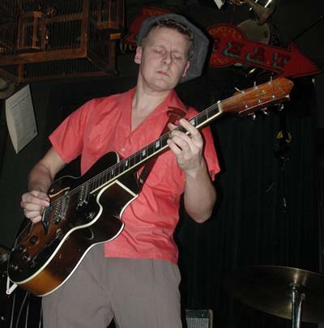

Андерс Левен (Anders Lewen) - гитарист и композитор группы "Knock-Out Greg & Blue Weather", одной из самых заметных свинговых групп в Европе, дает интервью журналу "Rollin' & Tumblin".RT: Андерс, расскажи о себе нашим читателям.
АЛ: Я вполне обычный человек, у меня есть дочь, я люблю музыку и стиль ретро. Много читаю, люблю итальянскую кухню. Родился в Уппсале 4 октября 1970 года. В 14 лет начал играть на гитаре и почти сразу полюбил блюз. Помню, как увидел Рольфа Викстрема по телевизору, и это произвело на меня сильное впечатление. Не то чтобы он по-настоящему на меня повлиял, но энергия, которая от него исходила, меня завораживала. В городе, где я тогда жил, Вастерасе, было блюзовое общество под названием "Blue Monday". Они приглашали хороших музыкантов, и лет с 16 я старался ходить на все концерты. Туда не всегда было просто попасть, но я как-то исхитрялся. Первым настоящим блюзменом, которого я видел на сцене, был Лютер Эллисон. Это было незабываемо - я понял, что именно этим хочу заниматься. Тогда мы вместе еще с двумя приятелями всерьез занялись гитарой. Все трое хотели играть музыку, а гитара нам казалась самым подходящим инструментом. Наши пути быстро разошлись: один хотел играть на классической гитаре, другой увлекся панк-роком, а я выбрал блюз, и не жалею об этом до сих пор.
Моя первая группа называлась "The Beautiful People". Мы пытались играть блюз, а также композиции Лед Зеппелин и Дип Перпл. Я играл на гитаре и пел, но в целом у нас не очень-то хорошо выходило. Потом была группа "Mr. Big Nose & his Blues Kings", которую организовали мы с ударником. Это уже было гораздо лучше, и блюза больше. К тому же, на счастье публики, я перестал петь.
RT: "Mavericks" в начале 90-х были уже гораздо более серьезной группой.
АЛ: Да, "Mavericks" стали "J'Jivers", потом "Soulmates", они так до сих пор называются. Большая группа с потрясающим солистом, Марино Валле. Очень соуловый голос. Сначала мы были блюзовым квартетом, а потом добавили в репертуар соул из-за мощного голоса Марино. Когда мы стали "J'Jivers", стиль не изменился, только добавились два саксофона. Я ушел из группы, когда она стала превращаться в "Soulmates". Я тогда уже играл и с "Blue Weather", и было пора принимать решение. Томас Хаммерлунд, гитарист из "Blue Weather", заменил меня в "J'Jivers"! "Mavericks" и "J'Jivers" были хорошие группы, но им не хватало профессионализма.
RT: До того, как ты пришел в "Blue Weather", группа называлась "Bluesvader" и гораздо больше увлекалась чикагским блюзом. Перемена стиля связана с твоим появлением в группе?
АЛ: Думаю да. В то время я уже очень любил ритм-энд-блюз 40-50х годов, наверное, это повлияло на стиль группы. Хотя мы по-прежнему любим чикагский блюз и, по-моему, очень неплохо его играем.
RT: Вы записывали свой второй альбом в Чикаго. Почему?
АЛ: У нас тогда была одна мысль, даже навязчивая идея - сделать диск в Чикаго, и чтобы Линвуд Слим (Lynwood Slim) был продюсером. Интересно, на что мы тогда рассчитывали, - неужели надеялись сыграть лучше только потому, что мы в Чикаго? Как бы то ни было, чуда не случилось. Звук был и вправду отличный (Джерри Холл был на высоте, он настоящий профессионал), но собой мы были недовольны. Но все равно отлично провели время, хотя и проболели все первые дни. Одно из самых приятных воспоминаний об этой поездке - концерт "Mighty Blue Kings", лучшей свинговой группы города: почти как на поп концерте, огромный зал забит, люди хором подпевают старым композициям 40х-50х., короче, невероятный вечер!
RT: "7-8-9-10 & Out", ваш третий диск, - огромный шаг вперед. Отличный отбор материала, прекрасные обработки, и группа играет гораздо уверенней и более зрело!
АЛ: Согласен. Именно с этого альбома начался наш собственный стиль, что касается репертуара, - по-моему, это отличная смесь разных жанров. И - самое главное - вокал Грега вышел на новый уровень, стал более зрелым и мощным.
RT: Начиная с этого альбома практически только ты пишешь музыку для группы, и тебе особенно удаются композиции, которые отсылают к музыкальной культуре 40х-50х. Тебе всегда нравилось писать песни?
АЛ: За комплимент спасибо. Да, всегда любил писать песни, сочинил их штук сто за последние пять лет. Но петь-то их приходится Грегу: если ему не нравится, он не будет петь. К тому же играть песню на концерте и записывать ее в студии - две совершенно разные вещи, а еще бывают песни, которые записывают, но так и не выпускают. Что касается идей, они ко мне приходят сами собой, основой композиции может стать услышанный где-то рифф, какая-нибудь история, слова или все сразу. Когда я пишу или играю, я не особенно думаю о конкретном жанре. Да, когда я играю кусок из Ти-Боун Уокера (T-Bone Walker), конечно, у меня в голове возникают его риффы...то есть я думаю, что у меня где-то в подсознании все эти жанры присутствуют. Что касается 40х-50х, просто я очень люблю музыку этой эпохи, никуда мне от нее не деться.
RT: "The wig-flipper" - ваш безусловный шедевр, он показывает, что вам подвластны все стили 50х годов.
АЛ: Спасибо, приятно это услышать от тебя, мы все тоже так считаем.
RT: Кто по-настоящему повлиял на твою игру на гитаре и почему?
АЛ: Ти-Боун Уокер (T-Bone Walker) - "for completeness on the small road - kind of narrow in his palyin', but perfect" (за полноту и совершенство в узком жанре). Джуниор Уотсон (Junior Watson) - "for completeness on the big road". (за Тайни Граймз(Tiny Grimes) и Билл Дженнингс (Bill Jennings) за их приджазованную, иногда рискованную манеру. Роберт Локвуд (Robert Lockwood) и Джимми Роджерс (Jimmy Rogers) за чикагский блюз. Плюс еще Би Би Кинг (BB King), Джонни "Гитара" Уотсон (Johnny "Guitar" Watson), Джимми Нолен (Jimmy Nolen),,, всех не упомнишь, их столько...
RT: Когда вы выходите на сцену, вам важно выглядеть в стиле ретро?
АЛ: Нам нравится так одеваться - может, это и не главное, но для нас важно. И публике нравится. Правда, нам как-то встретился один старый хиппи, который стал выяснять, почему мы не играем в джинсах: все блюзовые музыканты его молодости выступали в джинсах.
RT: А какие шведские музыканты тебе особенно близки?
АЛ: Я бы сказал, что по-настоящему на меня повлиял только Зеттерберг (Zetterberg). Мне очень нравится то, что он делает, к тому же у него большая музыкальная культура. Именно он научил меня понимать соул. Его голос можно запросто сравнить с голосами Бобби Блэнда (Bobby Bland), Джеймса Карра (James Carr)или Дона Брайанта (Don Bryant). Я очень люблю с ним играть.
RT: Как раз на альбоме, посвященном Биг Уолтеру Хортону (Big Walter Horton), "Horton's Briefcase", который только что вышел, вы играете вместе. А Биг Уолтера все еще хорошо знают в Швеции?
АЛ: Да, еще со времен радиопередачи "Blueskvarter". Я-то был слишком маленьким, чтобы слушать эту передачу, во время первой трансляции меня еще на свете не было. Когда ее возобновили, я уже знал большинство музыкантов, о которых там шла речь. Но совершенно точно: ее влияние было огромным. Сейчас на шведском радио почти не осталось блюза, а жаль, особенно потому, что интерес к этой музыке есть, и ее играют все больше. Но в Швеции есть очень хорошие исполнители на губной гармонике: а если ты играешь на гармонике, ты с большой вероятностью станешь лидером группы, и так или иначе повлияешь на ее стиль. А группа, в которой есть гармонист, неизбежно наткнется на Биг Уолтера, потому что он один из самых лучших.
RT: А такие удачные обложки ваших дисков - чья работа?
АЛ: Две последние - моя и нашего пианиста Фредрика. Обложкой "The wig-flipper" мы очень довольны, к тому же повеселились, пока над ней работали. Фредрик занимался технической частью, он в этом большой специалист. Сейчас он ушел из группы в какую-то контору, занимающуюся информатикой. Но при этом он сделал макет буклета для нового альбома Свена Зеттерберга, "Let me get over it". Это совсем в другом стиле, не такое ретро, как обложка для "The wig-flipper".
RT: Какие у вас планы на следующий год?
АЛ: Сейчас мы вовсю репетируем с новым составом. Фредрик от нас ушел, и его заменили двумя саксофонистами (сакс баритон и тенор). Еще у нас новый басист, Уббе Хед (Ubbe Hed), потому что Эрик Троестлер (Eric Troestler), который когда-то заменил Мику Савинайнена (Mika Savinainen), больше с нами не играет. Надеюсь, в этом году мы запишем новый альбом; в любом случае, скоро выйдет "Best of" на финском лейбле "Goofin'", но только на виниле. На май запланировано турне по Швеции совместно с Майком Санчесом (Mike Sanchez) (экс-Big Town Playboys) - мы только что вернулись из Норвегии, где аккомпанировали ему на четырех концертах, это было великолепно: это невероятный тип. Возможно, весной съездим в Калифорнию, дадим несколько концертов. А уже осенью будем участвовать в музыкальном фестивале "рок-н-ролла", который устраивают в Стокгольме. Должно получиться что-то довольно значительное.
RT: С какими современными группами ты чувствуешь родство?
АЛ: Если по стилю, это немецкие "B.B.& the Blues Shacks", бельгийские "Electric Kings", а в Штатах такие музыканты, как Линвуд Слим и ему подобные.
RT: Назови, пожалуйста, свои "любимые альбомы на все времена".
АЛ: Это трудно, их очень много. Определенно, то, что Ти-Боун Уокер записывал на "Capitol", записи Джимми Роджерса на "Chess". То, что Литл Уолтер (Little Walter) записывал на "Chess", конечно, тоже. "Leaps and Bounds" Билла Доггета (Bill Dogget), "Essential recordings" Джеймса Карра. Потом все 5 дисков "Complete recordings 1944-54" Тони Граймза, "Boogie at midnight" Роя Брауна (Roy Brown), "Scratch my back" Слима Харпо (Slim Harpo), "Opportunity Blues" Флойда Диксона (Floyd Dixon) и "Tryin' to live my life without you" Отиса Клэя (Otis Clay).
Еще очень люблю Джонни Отиса (Johnny Otis) и Отиса Реддинга (Otis Redding), еще менее известные вещи, как "Billy in the lion's den" Лео Паркера (Leo Parker)/Билла Дженнингса (Bill Jennings) (великий альбом!), Эдди Мака (Eddie Mak)(на "Savoy"), Уильяма Боллинджера (William Bollinger) ("Souther Soul Stock") и т.д. И я наверняка кого-нибудь еще забыл.
RT: Спасибо за интервью, Андерс, удачи тебе.
9 января 2001 г.
Перевод Екатерины Гершензон